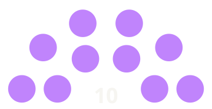

Président
Organisation des Étudiants en Infomratique de Limoges
2023 - 2024
OEIL | Limoges
Présidence de l'OEIL
En tant que président, j'ai dirigé l'association durant une année d'ouverture, orchestrant les activités et développant de nouveaux projets pour les étudiants en informatique de l'IUT du Limousin.
🗳️ Élection
Mon élection à la présidence d'OEIL s'est déroulée selon les modalités démocratiques suivantes :
-
✓
Candidature auprès des membres
Présentation de mon projet et vision pour l'association
-
✓
Assemblée générale élective
Vote démocratique par tous les étudiants en informatique de l'IUT
-
✓
Mandat d'un an
Non éligibilité pour réélection
-
✓
Responsabilité directe
Responsable auprès de la base électorale de l'association

OEIL Informatique
Conseil d'administration • Limoges
Nom de la liste : l'Oeil avec Logan FERREIRA
Position dans la liste : Tête de liste
Résultat : Liste élue à l’unanimité - 10/10 sièges
Missions principales
- Organisation d'événements : JPO, Intégrations, Soirées festives
- Management : Coordination du bureau et liason avec les institutions
- Partenariats : Négociations avec entreprises et des partenaires
- Communication : Promotion des activités et engagement des membres
- Gestion financière : Budget et sponsorisation
Réalisations
Adhésion à la Fédération LEA
Représentation étudiante dans une instance régionale étudiante
Réseau professionnel
Renforcement des liens avec les entreprises IT limousines et les étudiants
Communauté engagée
Croissance du nombre de membres et d'événementiels
Héritage
Cette année de présidence a marqué un tournant important pour OEIL, consolidant sa position d'association étudiante majeure à Limoges et établissant les bases pour une ouverture aux autres associations.